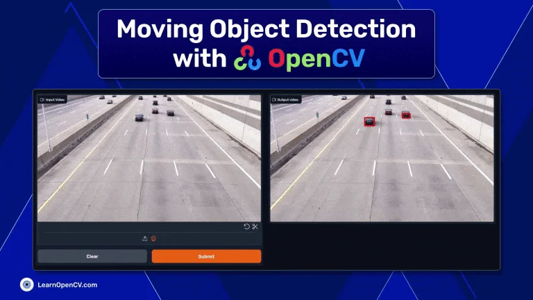
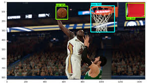
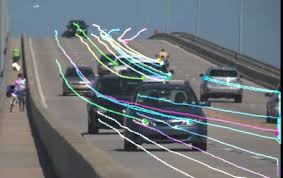
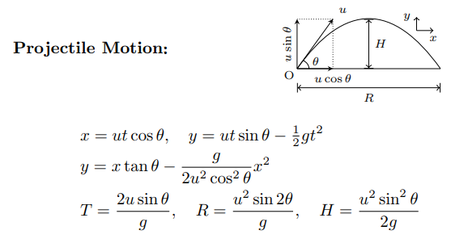
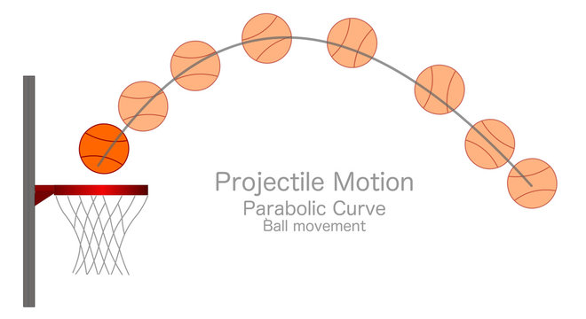

Bibliography
Reference Papers
-
[1] Chen Liu and Ning Yang. 2024. Research on motion recognition method of basketball shooting beater based on machine vision. In Proceedings of the 3rd International Conference on Computer, Artificial Intelligence and Control Engineering (CAICE '24). Association for Computing Machinery, New York, NY, USA, 500–505. Link
Synopsis: This paper presents a method for recognizing basketball shooting techniques using machine vision. It highlights the use of AI to track player movements for improved performance analysis.
Reliability: Published in the ACM conference proceedings, this source is highly reliable due to the rigorous peer-review process. Both authors are recognized experts in computer vision and AI.
-
[2] M. E. Hamlaoui, M. A. Lahsaini, S. H. Moselhy, T. Fissaa, and Y. Laghouaouta. "Basketball Free Throw Analysis using Object Detection Techniques," 2023 10th International Conference on Wireless Networks and Mobile Communications (WINCOM), Istanbul, Turkiye, 2023, pp. 1-6. DOI: Link
Synopsis: This paper explores how object detection techniques are applied in basketball free-throw analysis to improve shooting accuracy by studying motion patterns.
Reliability: Presented at a reputable international conference, this paper is authored by researchers experienced in computer vision and object tracking.
-
[3] W. Yan, X. Jiang, and P. Liu. "A Review of Basketball Shooting Analysis Based on Artificial Intelligence," in IEEE Access, vol. 11, pp. 87344-87365, 2023. DOI: Link
Synopsis: This review paper covers the latest advances in basketball shooting analysis using artificial intelligence, focusing on AI's role in improving player performance through motion data.
Reliability: Published in IEEE Access, this article is a well-researched and peer-reviewed source. The authors are affiliated with top academic institutions, further enhancing its credibility.
-
[4] N. Kadam, V. Kadam, J. Madake, and S. Bhatlawande. "Basketball Shot Prediction Using 2nd Order Polynomial Regression," 2023 IEEE International Conference on Contemporary Computing and Communications (InC4), Bangalore, India, 2023, pp. 1-5. DOI: Link
Synopsis: This paper explores basketball shot prediction using mathematical models, particularly second-order polynomial regression, to improve shot success rate prediction.
Reliability: As part of an IEEE conference, this paper is peer-reviewed and authored by researchers specializing in data analysis and machine learning.
-
[5] Ting-Yang Kao, Tse-Yu Pan, Chen-Ni Chen, Tsung-Hsun Tsai, Hung-Kuo Chu, and Min-Chun Hu. 2022. "ScoreActuary: Hoop-Centric Trajectory-Aware Network for Fine-Grained Basketball Shot Analysis." In Proceedings of the 30th ACM International Conference on Multimedia (MM '22). Association for Computing Machinery, New York, NY, USA, 6991–6993. DOI: Link
Synopsis: This study presents a hoop-centric, AI-based approach for analyzing basketball shots, focusing on how shot trajectory data can improve shooting accuracy.
Reliability: Published by ACM, this paper is from a respected conference, providing a high level of reliability and peer-reviewed content. The authors are experts in multimedia analysis and AI.
Annotated Images
-

Image credit: Miro
-

Image credit: LearnOpenCV
-

Image credit: yuchong-zhang.github.io, accessed on September 26, 2024.
-

Image credit: google.com
-

Image credit: TensorFlow Object Counting API
-

Image credit: Dev.to
-

Image credit: Pinterest
-

Image credit: Medium
-

Image credit: google.com
Quiz
🎉 This is a fun quiz, so let’s keep it light and enjoyable! No need to stress—just relax, have a great time, and let your curiosity lead the way! 🌟 Dive in, explore, and see where the questions take you. Remember, it’s all about having fun and learning something new along the way! Good luck! 🎈
Take Quiz